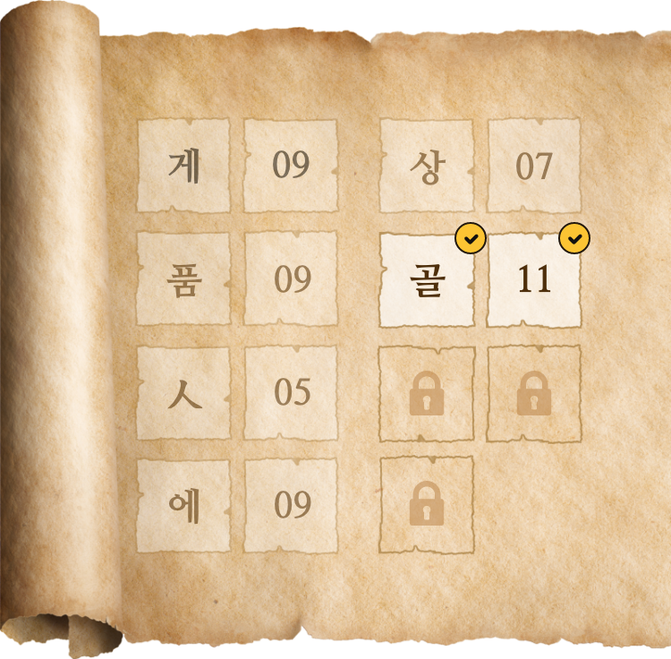

뒤로가기
#6 유물이 모인 곳에서
획득
골
11
성덕대왕신종은 봉황대 광장에서 시간을 알리는 용도로 사용되었지만 조선총독부 박물관이
세워지면서 현재 경주문화원 위치로 옮겨지게 되었다네.
그리고, 1915년 8월에 종각과 함께 박물관으로
옮겼고 국립경주박물관이 신축 이전됨에 따라
이 동종도 지금의 국립경주박물관 경내로
이전되었고,일명 봉덕사종·에밀레종이라고도
한다네.
